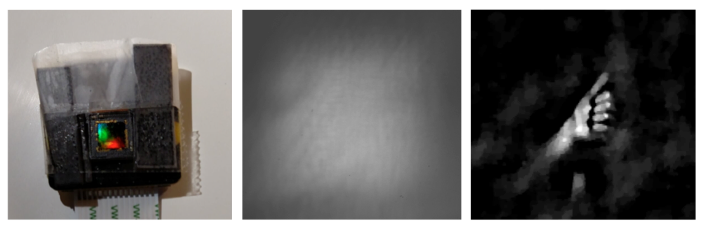

One of the best things about DiffuserCam is that it is easy to build your own! We provide a guide on how to build your own lensless camera for 2D photography. We recommend using a Raspberry Pi camera with scotch tape as the diffuser. We will also walk you through the algorithms, step-by-step, in an iPython notebook.
This is a quick-start guide. For more detailed desciptions and links to all resources, check out the full tutorial.
This is the quick-start guide to building a DiffuserCam out of tape. A more detailed building guide is provided here.
We will build our DiffuserCam to look like this:
Find the "focal distance" of the tape, the distance at which its PSF has the sharpest features (see Fig. 3 for an example). You should be able to find the distance at which there is a clear caustic pattern by shining a point source through the tape in a dark room and moving the tape closer or farther from the sensor by hand. The point source should be "at infinity" -- around 40 cm is enough for typical focal lengths.
(You may need to setup your Raspberry Pi so you can see a preview of the camera output.)We'll reconstruct our images on a regular computer (not the Raspberry Pi), so you'll need to transfer your images to your computer. Follow the instructions below to install the correct files and process your data
(These instructions assume an Anaconda distribution because it allows for easy installation of dependencies. If you have your own Python3 development setup, feel free to use that instead. The packages you need to install are listed in the environment.yml file.)
Install Anaconda if you do not already have it. Then, open the terminal on your computer and navigate to the directory in which you want to place all the DiffuserCam code. If using Mac of Linux, enter the following commands:
git clone https://github.com/Waller-Lab/DiffuserCam-Tutorial.git
cd DiffuserCam-Tutorial
conda env create
source activate diffuser_camNote: Our code assumes images are black-and-white (1 channel, not 3 as in the typical RGB image). The down/upsampling also assumes that the image dimensions are even numbers. If you use our image capture code, both of these requirements should be automatically satisfied.
These instructions are for setting up your Raspberry Pi and PiCamera in a convenient way for taking pictures and transferring the images to your computer for processing. If you already have a setup that works, feel free to ignore this section.
sudo apt-get install python3-picamera #also installs python3-numpy
sudo apt-get install python3-pillow